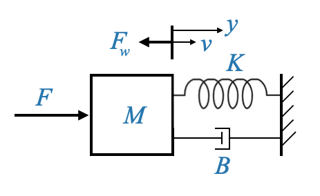

Introduzione alla modellazione dei sistemi dinamici
La modellazione funge da spina dorsale per comprendere e manipolare i sistemi dinamici. Questi sistemi dinamici comprendono vari componenti:
- Impianti
- Controllori
- Sensori
- Attuatori
- Eventuali altri dispositivi di intervento
L’obiettivo primario? Stabilire equazioni precise che definiscano questi sistemi dinamici.
Ricordando le nostre discussioni precedenti, il nostro focus è sempre stato sull’applicazione delle leggi fisiche. Così facendo, possiamo trasformare le equazioni differenziali derivate in forme più digeribili. Due di questi moduli che utilizzeremo ampiamente sono:
- Modelli con variabili di stato
- Modelli di funzioni di trasferimento
Questi modelli offrono un modo strutturato per rappresentare matematicamente i sistemi, consentendo l’analisi e la progettazione.
Meccanica
Usando la meccanica della traslazione, emergono tre elementi fondamentali:
- La massa ideale \(M\)
- Il coefficiente di attrito \(B\)
- La costante elastica \(K\)
Massa
La componente \(M\), che rappresenta la massa ideale, è una semplificazione, un’idealizzazione a parametri concentrati di una massa distribuita. Negli scenari del mondo reale, non si incontra una singola particella (massa concentrata) di massa \(M\). E’ un’approssimazione in cui assumiamo che l’intera massa sia centrata nel suo baricentro.
Domanda pop-up: Perché utilizziamo l’idealizzazione dei parametri concentrati per la massa ideale \(M\) nei sistemi dinamici? Risposta: Usiamo l’idealizzazione dei parametri concentrati per semplificare la rappresentazione delle masse distribuite approssimandole come una massa a punto singolo concentrata nel suo centro di gravità. Ciò rende la modellazione e l’analisi più trattabili.
Attrito
Il coefficiente di attrito \(B\) presenta una serie di sfide. Possono sorgere attriti a causa di vari fenomeni, quindi potrebbero essere necessari modelli diversi. Ad esempio, un attrito di guida costante tra le superfici si tradurrebbe in una forza di attrito costante per tutte le velocità, nota come attrito di Coulomb. D’altra parte, quando due superfici scivolano con un mezzo viscoso in mezzo, la forza di attrito è tipicamente proporzionale alla velocità, portando all’equazione \(F=Bv\), dove \(B\) è il coefficiente di attrito viscoso. Questo modello è prevalente quando un corpo solido interagisce con un mezzo fluidico.
È essenziale riconoscere la presenza di altri tipi di attrito, come l’attrito di Coulomb, in dispositivi come i motori CC dovuti al contatto delle spazzole. Ma poiché le nostre discussioni iniziali ruotano attorno a modelli lineari, considereremo tutti gli attriti non lineari come disturbi del sistema.
Molle
Infine, la costante elastica \(K\) entra in gioco quando c’è una deformazione elastica. In questo caso la forza dovuta all’effetto molla è data da \(F=Kx\), dove \(x\) è lo spostamento.
Nota: è essenziale comprendere che questi modelli, sebbene incredibilmente utili, sono approssimazioni. Semplificano le complessità del mondo reale in parti digeribili che possono essere utilizzate per la progettazione e l’analisi.
Derivazione del modello matematico
Consideriamo un sistema meccanico complesso, in questo caso il sistema di sospensione di un’auto, e vediamo come possiamo approssimarlo attraverso una massa, una molla e un ammortizzatore più semplici.
Dato un sistema fisico, il nostro primo passo è derivarne il modello matematico. Questo è essenziale per l’analisi o la progettazione.
Prendiamo, ad esempio, il carico su un sistema comprendente la massa di un pistone di potenza, il collegamento di trasmissione e le ruote. Tutti questi componenti hanno masse distribuite. Tuttavia, per il nostro modello, lo semplificheremo come una singola particella di massa \(M\).
Nel nostro caso la massa distribuita è la massa del pistone di potenza, la massa del cinematismo e la massa delle ruote. Ma modelleremo tutto questo come una particella con massa \(M\).
Gli attriti nel nostro sistema derivano da varie fonti, come il movimento di un pistone in un mezzo viscoso o l’interazione tra il collegamento di trasmissione e l’ambiente circostante. Modelleremo questi attriti utilizzando il parametro \(B\) e un attrito viscoso.
Gli pneumatici sulla strada potrebbero creare un attrito di Coulomb, ma lo considereremo come un disturbo che agisce sul nostro sistema.
Infine, il comportamento elastico dei pneumatici può essere modellato attraverso una molla con parametro \(k\).
Con queste considerazioni possiamo modellare il sistema di sospensione del gatto con:
Questa trasformazione, pur comportando varie approssimazioni, si è rivelata efficace per la progettazione del sistema di controllo.
Abbiamo visto che a seconda del parametro \(\zeta\) abbiamo non smorzato (\(\zeta=0\)), smorzato (\(0<\zeta<1\)), critically damped (\(\zeta=1\)) and over damped systems (\(\zeta>1\)).
In alcune situazioni, potrebbe essere necessario introdurre un attrito intenzionale per controllare lo smorzamento del sistema. Ciò può essere ottenuto utilizzando un dispositivo chiamato dashpot, che utilizza un mezzo oleoso per fornire resistenza al movimento.
Modelli fisici e approssimazioni
Qualsiasi situazione fisica, sia essa naturale o industriale, soprattutto se riguarda un sistema meccanico in modalità traslazionale, può essere modellata utilizzando i principi di cui abbiamo discusso. Questa rappresentazione servirà come nostro modello principale.
Tuttavia, man mano che andiamo avanti, è essenziale riconoscere le complessità e le approssimazioni che abbiamo impiegato. Ogni modello che deriviamo ha le sue radici in vari presupposti e semplificazioni, che sono vitali per rendere gestibile il modello.
Considera i parametri \(M\) (la massa ideale), \(K\) (la costante della molla) e \(B\) (la costante del dash pot o costante di attrito viscoso). Nel nostro modello, \(F_\omega\) indica una forza di disturbo che agisce sul sistema. Potrebbe essere attribuito ad attriti incontrollati o anche a fattori ambientali. Abbiamo scelto il simbolo “\(\omega\)” per rappresentare i disturbi.
Le variabili \(y\) e \(v\) denotano rispettivamente spostamento e velocità.
|  |
Domanda pop-up: Perché abbiamo bisogno di modellare i disturbi nel nostro sistema? Risposta: I disturbi possono influenzare le prestazioni e la stabilità di un sistema di controllo. Modellandoli, possiamo progettare strategie di controllo per mitigarne gli effetti e garantire che il sistema funzioni come previsto.
Per trasformare questo modello fisico in un modello di equazioni differenziali, è spesso utile tracciare un diagramma di corpo libero.

|
Questo diagramma visualizza le masse come nodi e le forze che agiscono su di esse sono rappresentate con frecce. Per il nostro sistema attuale, abbiamo un’unica massa, \(M\), con una forza applicata \(F\) e una forza di disturbo \(F_\omega\). Inoltre, la forza della molla \(Ky\) e la forza di attrito \(Bv\) si oppongono al movimento. Bisogna considerare anche la forza d’inerzia dovuta alla massa \(M\) stessa, che contrasta il movimento.
Un principio cruciale in meccanica è l’equazione dell’equilibrio delle forze, che afferma che le forze che promuovono il movimento dovrebbero eguagliare le forze che si oppongono ad esso. Pertanto la nostra equazione diventa:
\[ M\dot{v} + B{v} + Ky = F - F_\omega \]
Qui, \(F-F_\omega\) è la forza netta che agisce sul sistema. \(\dot{v}\) denota accelerazione e \(F_\omega\) può assistere o contrastare la forza applicata \(F\) a seconda della sua natura. Vale la pena notare che anche se \(F_\omega\) aiuta il movimento, è comunque considerato un disturbo, poiché il sistema non è stato progettato pensando a questo.
Possiamo convertirlo in un modello con variabili di stato:
\[ \begin{align} x_1 &= y\\ x_2 &= v = \dot{y} \end{align} \]
e abbiamo già visto come farlo. Concentriamoci invece sul modello della funzione di trasferimento.
Trasformazione nel modello della funzione di trasferimento
Ogni sistema di controllo può essere rappresentato nel dominio di Laplace, rendendo più semplice l’analisi e la progettazione di strategie di controllo. Per il nostro sistema, la funzione di trasferimento è una relazione tra un singolo input e output. Tuttavia, si noti che il sistema è composto da due ingressi (\(F, F_\omega\)) e un’uscita (\(y\)).
Possiamo riscrivere la nostra equazione per esplicitare la variabile di output:
\[ M\ddot{y} + B\dot{y} + Ky = F - F_\omega \]
La funzione di trasferimento è una descrizione SISO e quindi, utilizzando come diagramma a blocchi:

|
Possiamo quindi scrivere la funzione di trasferimento tra \(Y(s)\) e \(F(s)\), e tra \(Y(s)\) e \(F_\omega(s)\)
Data la rappresentazione di cui sopra, possiamo esprimere la funzione di trasferimento tra \(Y(s)\) e \(F(s)\) (assumendo \(F_\omega(s)=0\)) come:
\[ \frac{Y(s)}{F(s)} = \frac{1}{Ms^s+Bs+K} \]
e questa è anche la funzione di trasferimento tra \(Y(s)\) e \(F_\omega(s)\).
Possiamo quindi chiamare:
\[ \frac{Y(s)}{F(s)} = \frac{1}{Ms^s+Bs+K} = Sol(s) \]
Con un po’ di semplificazione e standardizzazione, e considerando lo smorzamento e la frequenza propria del sistema, otteniamo:
\[ G(s)=\frac{1}{\frac{M}{K}s^s + \frac{B}{K}s + 1} = \frac{K_S}{\frac{1}{\omega_n ^2}s^2 + \frac{2\zeta}{\omega_n} s + 1 } \]
Dove ho chiamato \(K_S\) il sistema guadagna per differenziarlo da \(K\).
Questa funzione, definita ritardo quadratico, è un ritardo di secondo ordine in contrasto con il ritardo di primo ordine (o semplice) di cui abbiamo discusso in precedenza.
Unità
L’importanza di comprendere queste unità e parametri non può essere sopravvalutata. Costituiscono la base su cui sono costruiti i nostri modelli matematici, consentendoci di fare previsioni, progettare controllori e comprendere il comportamento del sistema.
- Forza: Newton
- Dislocamento \(y\): Metri
- Velocità \(v\): Metri/secondo
- Accelerazione: metri/secondo^2
- Massa \(M\): Chilogrammi
- Coefficiente di attrito \(B\): Newton/(metri/secondo)
- Costante della molla \(K\): Newton/metro
Domanda pop-up: cosa distingue un ritardo di secondo ordine (ritardo quadratico) da un ritardo di primo ordine (semplice)?
Risposta: un ritardo di secondo ordine ha un termine quadratico (s^2) al denominatore, mentre un ritardo di primo ordine ha solo un termine lineare (s). Ciò rende il sistema del secondo ordine più complesso, con proprietà come oscillazioni e superamento che non sono presenti in un sistema del primo ordine.
Sistemi di rotazione ad asse fisso
Passando ai sistemi rotazionali, troviamo paralleli con le nostre discussioni precedenti. I parametri chiave qui includono:
- \(J\): Momento d’inerzia del sistema (Ricordare che la coppia d’inerzia dovuta a \(J\) si oppone al moto).
- \(B\): Coefficiente di attrito viscoso
- \(K\): costante di primavera (sebbene spesso ignorata in molte applicazioni)
Consideriamo, ad esempio, l’orientamento di un’antenna.
Il momento d’inerzia dell’antenna potrebbe essere rappresentato dal parametro \(J\). Tuttavia, questo parametro potrebbe anche spiegare l’inerzia di altri componenti, come il rotore del motore, l’albero e persino gli ingranaggi. Come prima gli elementi vengono distribuiti, ma tutti questi sono raggruppati insieme in un unico parametro per la modellazione.
Allo stesso modo, gli effetti di attrito (ad esempio cuscinetti, ecc.) sono incapsulati nel parametro \(B\). Ricorda, le forze di smorzamento svolgono un ruolo cruciale nel controllare le oscillazioni in un sistema e garantire che si stabilizzi in una posizione stabile nel tempo.
Qui, di solito incontriamo due parametri principali, \(J\) e \(B\). In questi sistemi, spesso trascuriamo l’effetto molla \(K\) a causa della breve lunghezza degli alberi e delle coppie relativamente basse generate. Tuttavia, in alcune applicazioni, come i sistemi controllati da robot, la flessibilità dell’albero diventa significativa, garantendo l’inclusione del parametro \(K\).
Per stabilire un modello matematico per un tale sistema, rappresenteremo l’elemento inerziale \(J\), la coppia applicata \(T\) e l’effetto di attrito \(B\).

|
Per il nostro diagramma di corpo libero, la coppia applicata \(T\) si oppone alla coppia di disturbo \(T_\omega\) e alla coppia di attrito \(B\dot{\theta}\) (dove \(\dot{\theta}\) è la velocità angolare ) si oppone alla mozione.
Utilizzando principi simili a quelli precedenti, la nostra equazione diventa:
\[ J\ddot{\theta} + B \dot{\theta} = T − T_\omega \]
Dove:
- \(J \ddot{\theta}\) è la coppia inerziale.
- \(B \dot{\theta}\) è la coppia di smorzamento.
- \(T\) è la coppia applicata.
- \(T_\omega\) è la coppia di disturbo.
Il modello della funzione di trasferimento per questo sistema, considerando \(\theta(s)\) come variabile di output, può essere dato da:
Dove:
\[ G(s) = \frac{1}{Js^2+Bs}=\frac{1}{s(Js+B)} \]
Esprimendo la funzione di trasferimento nella sua forma standard:
\[ G(s) = \frac{1}{s(Js+B)} = \frac{K}{s(\tau s + 1)} \]
Dove:
- \(K=\frac{1}{B}\) è il guadagno del sistema.
- \(\tau=\frac{J}{B}\) è la costante di tempo del sistema.
La costante di tempo, \(\tau\), rappresenta la rapidità con cui il sistema risponde ai cambiamenti nell’input, con valori più piccoli che indicano risposte più rapide.
Questo sistema è composto da un integratore \(\frac{1}{s}\) e \(\frac{1}{(\tau s + 1)}\) è un semplice ritardo, collegati in cascata.
Modifica della variabile di output
In precedenza ci siamo concentrati sul sistema rotazionale in cui lo spostamento angolare, \(\theta\), era la variabile di output primaria di interesse. Tuttavia, in alcune applicazioni, potrebbe essere più pertinente considerare la velocità angolare, \(\omega\) (o \(\dot\theta\)), come variabile di output.
Se cambiamo la nostra variabile di output in velocità angolare, la nostra equazione differenziale che governa cambia. Nello specifico l’equazione diventa: \[ J\dot{\omega} + B {\omega} = T − T_\omega \]
Dove:
- \(J \dot\omega\) indica la coppia inerziale dovuta all’accelerazione.
- \(B\omega\) indica la coppia di smorzamento dovuta alla velocità.
- \(T\) e \(T_\omega\) sono, come prima, rispettivamente la coppia applicata e quella di disturbo.
Trasformando l’equazione differenziale di cui sopra nel dominio di Laplace, e considerando \(\omega(s)\) come variabile di output, la funzione di trasferimento diventa:
\[ G(s) = \frac{K}{\tau s + 1} \]

|
Dove:
- \(K=\frac{1}{B}\) è il guadagno del sistema.
- \(\tau=\frac{J}{B}\) è la costante di tempo del sistema.
- Guadagno del sistema, \(K\): indica come la velocità angolare del sistema, ω, cambia con le variazioni della coppia. Un \(K\) maggiore significa che il sistema è più sensibile alle variazioni di coppia.
- Costante di tempo, τ: rappresenta la rapidità con cui la velocità angolare del sistema risponde ai cambiamenti nella coppia di ingresso. Un τ più piccolo indica una risposta più rapida.
Domanda pop-up: Perché potremmo essere interessati alla velocità angolare come risultato piuttosto che allo spostamento angolare? Risposta: la velocità angolare può essere cruciale in scenari in cui la velocità di rotazione è più critica della posizione, come nei motori, nelle turbine o in qualsiasi sistema in cui il controllo della velocità di rotazione è essenziale.
La commutazione della variabile di uscita dallo spostamento angolare alla velocità angolare modifica la dinamica del sistema:
- Il sistema ora risponde principalmente ai cambiamenti di velocità piuttosto che di posizione.
- Le strategie di controllo potrebbero differire, concentrandosi sul mantenimento o sulla regolazione della velocità piuttosto che sul raggiungimento di una posizione particolare.
Ad esempio, in un’applicazione con servomotore in cui l’obiettivo è mantenere una velocità costante in condizioni di carico variabili, la velocità angolare come variabile di uscita sarebbe più rilevante dello spostamento angolare. Al contrario, per il posizionamento preciso di un braccio robotico, lo spostamento angolare potrebbe essere la variabile di output più appropriata.
Ora possiamo rivisitare il sistema quando l’output era la posizione:

|
Un motore con controllo di posizione ha un effetto integrativo. Non esiste un integratore fisico ma l’effetto complessivo è quello di un integratore.
Da uno schema a blocchi funzionali di trasferimento a modelli a variabili di stato
Si noti inoltre che se ci viene fornito un modello di diagramma della funzione di trasferimento, l’uscita di un integratore sono variabili di stato adatte.
È importante anche realizzare che l’output di un ritardo del primo ordine è lo stesso di un integratore insieme a un filtro. Quindi anche il suo output è una variabile di stato adatta.

|
E dal diagramma sopra possiamo facilmente calcolare il modello statale.
Dall’integratore di destra otteniamo:
\[ \dot{x_1}=x2 \]
e dal ritardo del primo ordine otteniamo:
\[ \tau\dot{x_2} + x_2 = K(T-T_\omega) \]
ed infine possiamo trovare le matrici \(A\), \(b\), \(c\) e \(d\) per averlo nella forma standard.
Pensa a cosa succede con un ritardo del secondo ordine (ad esempio, il sistema massa-molla-smorzatore).
Un ritardo del secondo ordine sarà modellato con due variabili di stato, ma in questo caso queste non saranno disponibili come output di un integratore.

|
La selezione delle variabili di stato non è univoca, ma un’opzione che funzionerà è prendere l’output come una delle variabili di stato e la sua derivata come le altre variabili di stato. In questo caso:
\[ \begin{align*} x_1 &= y\\ x_2 &= \dot{y} = \dot{x_1}\\ \end{align*} \]
Che dà la prima equazione:
\[ \begin{align} \dot{x_1}=x_2 \end{align} \]
E per la seconda equazione possiamo scrivere:
\[ \frac{1}{\omega_n^2}\ddot{y} + \frac{2\zeta}{\omega_n} \dot{y} + y = K(F-F_\omega) \]
da cui ricaviamo:
\[ \begin{align} \dot{x_2}= \Big[ -x_1 - \frac{2\zeta}{\omega_n}x_2 + K(F-F_\omega) \Big] \omega_n^2 \end{align} \]
Nota che ci sono due input: \(F\) e \(F_\omega\) e quindi il modello delle variabili di stato sarà:
\[\begin{aligned} \begin{bmatrix} \dot{x}_1(t) \\ \dot{x}_2(t) \\ \end{bmatrix} &= \begin{bmatrix} a_{11} & a_{12} \\ a_{21} & a_{22} \\ \end{bmatrix} \begin{bmatrix} x_1(t) \\ x_2(t) \\ \end{bmatrix} + \begin{bmatrix} b_{11} & b_{12} \\ b_{21} & b_{22} \\ \end{bmatrix} \begin{bmatrix} F(t) \\ F_\omega(t) \\ \end{bmatrix} \end{aligned}\] \[\begin{aligned} y(t) = \begin{bmatrix} c_{1} & c_{2} \\ \end{bmatrix} \begin{bmatrix} x_1(t) \\ x_2(t) \\ \end{bmatrix} + \begin{bmatrix} d_{11} & d_{12} \\ \end{bmatrix} \begin{bmatrix} F(t) \\ F_\omega(t) \\ \end{bmatrix} \end{aligned}\]Si noti che \(F_\omega\) è un disturbo ma è un input nel modello.
Unità
L’importanza di comprendere queste unità e parametri non può essere sopravvalutata. Costituiscono la base su cui sono costruiti i nostri modelli matematici, consentendoci di fare previsioni, progettare controllori e comprendere il comportamento del sistema.
- Coppia: Newton\(\cdot\)m
- Spostamento \(\theta\): Radianti
- Velocità \(\dot\theta\): radianti/secondo
- Accelerazione \(\ddot\theta\): Radianti/secondo^2
- Coefficiente di attrito \(B\): Newton-m/(rad/secondo) - da \(T=B\dot{\theta}\)
- Momento d’inerzia \(J\): Newton-m/(rad/sec^2) o kg-m^2
Principio delle variabili analoghe
Nel vasto regno della dinamica dei sistemi, è spesso utile tracciare parallelismi tra diversi tipi di sistemi per semplificare la nostra comprensione. Uno di questi approcci consiste nell’analogizzare tra sistemi meccanici ed elettrici. Questa analogia ci consente di tradurre il comportamento di un tipo di sistema in un altro, dandoci ulteriori prospettive e strumenti di analisi e progettazione.
Al centro del concetto di sistemi analoghi c’è l’idea che diversi sistemi governati da equazioni differenziali simili esibiranno un comportamento dinamico identico. Pertanto, se studiamo la risposta di un sistema, possiamo dedurre il comportamento della sua controparte analoga.
Per capirlo consideriamo un circuito elettrico:
Questo circuito elettrico è costituito da un resistore (\(R\)), un induttore (\(L\)) e un condensatore (\(C\)), pilotato da una sorgente di corrente (\(i\)).
Possiamo scrivere l’equazione come:
\[ \frac{e}{R} + i_2 + C\frac{de}{dt} = i \]
\[ L\frac{di_2}{dt} = e \]
Dalla corrente attraverso l’induttore e dalla tensione attraverso il condensatore possiamo derivare il solito modello della variabile di stato.
Nel tracciare parallelismi tra sistemi meccanici ed elettrici:
- La forza in un sistema meccanico è analoga alla tensione in un sistema elettrico.
- La velocità o lo spostamento in un sistema meccanico possono essere paragonati alla corrente in un sistema elettrico. Utilizzando queste analogie, possiamo trasformare i modelli di sistemi meccanici in circuiti elettrici equivalenti. Questa equivalenza consente l’applicazione di tecniche di analisi dei circuiti elettrici consolidate ai sistemi meccanici.
L’equazione che governa questo sistema può essere scritta come:
\[ \begin{align} \frac{e}{R} + C \frac{de}{dt} + \frac{1}{L} \int_{-\infty}^{t} e(\tau) d\tau = i \end{align} \]
Dove:
- \(e\) è la tensione ai capi dei componenti.
- \(i_2\) è la corrente che attraversa l’induttore.
Barra laterale - Modellazione e analisi di un circuito RLC parallelo con una sorgente di corrente
Il modello per un circuito con una sorgente di corrente e un resistore (R), un induttore (L) e un condensatore (C) in parallelo può essere rappresentato utilizzando la legge della corrente di Kirchhoff (KCL). KCL afferma che la somma delle correnti che entrano in un nodo (o una giunzione) è uguale alla somma delle correnti che escono dal nodo.
Rappresentazione del circuito:

|
Uno schema circuitale che mostra una sorgente di corrente $ I_s $ collegata a una combinazione parallela di un resistore (R), un induttore (L) e un condensatore (C).
Modello matematico:
Per il circuito dato, applichiamo KCL al nodo in cui R, L e C sono collegati in parallelo. Indicheremo la corrente attraverso il resistore come $ I_R $, la corrente attraverso l’induttore come $ I_L $ e la corrente attraverso il condensatore come $ I_C $.
Secondo la legge di Ohm:
\[ I_R = \frac{V}{R} \] Dove $ V $ è la tensione ai capi del resistore (e anche ai capi dell’induttore e del condensatore a causa della connessione in parallelo).
Per l’induttore: \[ I_L(t) = \int_{-\infty}^{t} \frac{V(\tau)}{L} \, d\tau \] Oppure nella forma differenziale: \[ V = L \frac{dI_L}{dt} \]
Per il condensatore: \[ I_C(t) = C \frac{dV}{dt} \]
Combinando queste equazioni utilizzando KCL: \[ I_s = I_R + I_L + I_C \]
\[ I_s = \frac{V}{R} + \int_{-\infty}^{t} \frac{V(\tau)}{L} \, d\tau + C \frac{dV}{dt }\]
Questa equazione rappresenta la relazione tra la corrente sorgente $ I_s $ e la tensione $ V $ attraverso i componenti paralleli. È un’equazione differenziale del secondo ordine dovuta alla presenza sia dell’induttore che del condensatore.
FINE DELLA BARRA LATERALE
Consideriamo ora le equazioni che governano un sistema meccanico.
Per il sistema meccanico si può applicare la seconda legge di Newton, ottenendo un’equazione che rappresenta la somma delle forze agenti sulla massa pari al prodotto della massa per la sua accelerazione.
L’equazione differenziale che governa questo sistema è:
\[ \begin{align} M\ddot{y} + B\dot{y} + Ky = F \end{align} \]
Dove - \(y\): è lo spostamento - assumiamo che \(F_\omega=0\) (se facciamo riferimento all’esempio precedente)
Possiamo ora scrivere la precedente equazione (1) come:
\[ M\dot{v} + Bv + K\int_{-\infty}^{t} v(\tau)d\tau = F \]
Dove - \(v\): è la velocità
Le equazioni elettriche e meccaniche sono identiche:
\[ \begin{align} C \dot{e} + \frac{1}{R}e + \frac{1}{L} \int_{-\infty}^{t} e(\tau) d\tau = i \end{align} \]
\[ \begin{align} M\dot{v} + Bv + K\int_{-\infty}^{t} v(\tau)d\tau = F \end{align} \]
Ciò significa che se si fornisce un input di passo Forza nell’equazione (2) e si misura la risposta \(v\), o un input di passo corrente nell’equazione (1) e si misura la risposta \(e\), i due saranno identici per quanto per quanto riguarda la loro dinamica.
Ciò consente di disegnare un equivalente elettrico di sistemi meccanici, termici, liquidi, ecc.
Perché spesso abbiamo bisogno di un sistema elettrico? Perché sono facili da sperimentare.
Tracciando parallelismi tra i due sistemi, otteniamo l’analogia Forza-Corrente:
- La Forza (F) nel sistema meccanico è analoga alla Corrente (I) nel sistema elettrico.
- La Velocità (v) nel sistema meccanico è analoga alla Tensione (e) nel sistema elettrico.
- Massa (M) è analoga a Capacità (C).
- Lo Smorzamento (B) è analogo al reciproco della Resistenza (1/R).
- La costante di molla (K) è analoga al reciproco dell’induttanza (1/L).
Analogia coppia-corrente per sistemi rotazionali
Per i sistemi rotazionali meccanici, l’analogia può essere estesa:
- Coppia (T) è analoga a Corrente (I).
- Velocità angolare (ω) è analoga a Tensione (e).
- Momento di inerzia (J) è analogo a Capacità (C).
- Lo Smorzamento rotazionale (B) rimane analogo al reciproco della Resistenza (1/R).
- La costante torsionale della molla (K) è analoga al reciproco dell’induttanza (1/L).
Introduzione ai Sistemi Termici nel Controllo Automatico
Altri due sistemi essenziali nell’ingegneria di controllo sono i sistemi termici e i sistemi di livello dei liquidi. Questi sistemi seguono gli stessi principi di controllo dei sistemi meccanici, ma con parametri e componenti diversi.
- Sistemi termici: si occupano di conduzione del calore, radiazione e convezione.
- Sistemi di livello dei liquidi: si concentrano sulla dinamica dello stoccaggio e del flusso dei liquidi.
Trasferimento di calore attraverso una parete solida
Consideriamo un muro di qualsiasi materiale con superficie \(A\) (\(m/s^2\)) e spessore \(l\) (\(m\)). Sia \(\theta_1\) (\(^oC\)) e \(\theta_2\) (\(^oC\)) le temperature su entrambi i lati di questo muro.

|
Il trasferimento di calore attraverso questa parete può essere descritto dalla seguente equazione:
\[ h = \frac{\sigma A(\theta_1−\theta_2)}{l} \]
Dove: - \(h\) è la velocità di trasferimento del calore (in Joule al secondo). - \(\sigma\) è la conducibilità termica del materiale.
Da una prospettiva analoga, considerando che \(h\) è simile alla corrente e la differenza di temperatura \(\theta_1−\theta_2\) è simile alla tensione, l’equazione di cui sopra può essere vista come:
\[ h = \frac{\theta_1−\theta_2}{R} \]
Dove: - \(R = \frac{l}{\sigma A}\) è la resistenza di conduzione del materiale.
Trasferimento di calore all’interfaccia liquido-solido
Considera un’interfaccia solido-liquido, dove viene trasferito il calore. Sia \(U\) il coefficiente del film su questa interfaccia e \(A\) sia l’area della superficie di contatto.
Il trasferimento di calore in questo scenario può essere descritto da:
\[ h = UA(\theta_1−\theta_2) \]
Dove: - \(\theta_1−\theta_2\) è il gradiente netto lungo la pellicola
O
\[ h = \frac{\theta_1−\theta_2}{R} \]
Dove: - \(R = \frac{1}{U A}\) è la resistenza al trasferimento di calore convettivo
Accumulo di calore in un solido
L’accumulo di calore svolge un ruolo fondamentale nei sistemi termici. Consideriamo lo stesso muro descritto in precedenza. Il calore immagazzinato all’interno di questa parete può essere rappresentato come:
\[ h=Mc\frac{d\theta}{dt} \]
Dove:
- \(h\) è la portata di calore in Joule al secondo
- \(M\) è la massa del materiale
- \(c\) è il calore specifico del materiale
L’equazione può essere scritta come:
\[ h = C\frac{d\theta}{dt} \]
Dove: - \(C=Mc\) è la capacità termica del materiale.
Accumulo di calore in un solido
L’accumulo di calore svolge un ruolo fondamentale nei sistemi termici. Consideriamo lo stesso muro descritto in precedenza.

|
Dove:
- \(M\) è la massa
- \(\theta\) è la temperatura
La velocità di variazione del calore immagazzinato all’interno di questa parete può essere rappresentata come:
\[ h=Mc\frac{d\theta}{dt} \]
Dove: - \(h\) è in Joule al secondo (velocità di variazione del calore immagazzinato) - \(c\) è il calore specifico del materiale.
L’equazione può essere scritta come:
\[ h=C\frac{d\theta}{dt} \]
Dove:
- \(C=Mc\) è la capacità termica del materiale.
Accumulo di calore in un serbatoio per liquidi
Consideriamo un serbatoio contenente un liquido di volume \(V\) alla temperatura \(\theta\).

|
L’accumulo di calore all’interno del liquido può essere rappresentato come:
\[ h=V\rho c\frac{d\theta}{dt} \]
Dove:
- \(\rho\) è la densità del liquido (\(Kg/m^3\)).
- \(c\) è il calore specifico del liquido.
L’equazione può essere scritta come:
\[ h=C\frac{d\theta}{dt} \]
Dove:
- \(C=V\rho c\) è la capacità termica del liquido.
I sistemi termici hanno equivalenti \(R\) e \(C\).
Domanda pop-up: Perché usiamo spesso l’analogia dei circuiti elettrici quando analizziamo i sistemi termici?
Risposta: L’analogia dei sistemi termici con i circuiti elettrici ci consente di applicare la teoria familiare dei circuiti elettrici per comprendere e analizzare il comportamento dei sistemi termici. Questo approccio semplifica scenari termici complessi e fornisce informazioni intuitive.